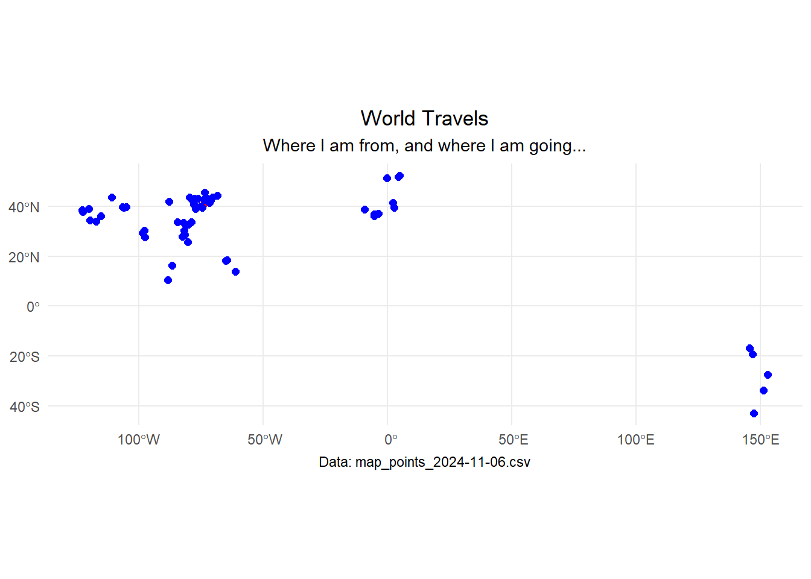
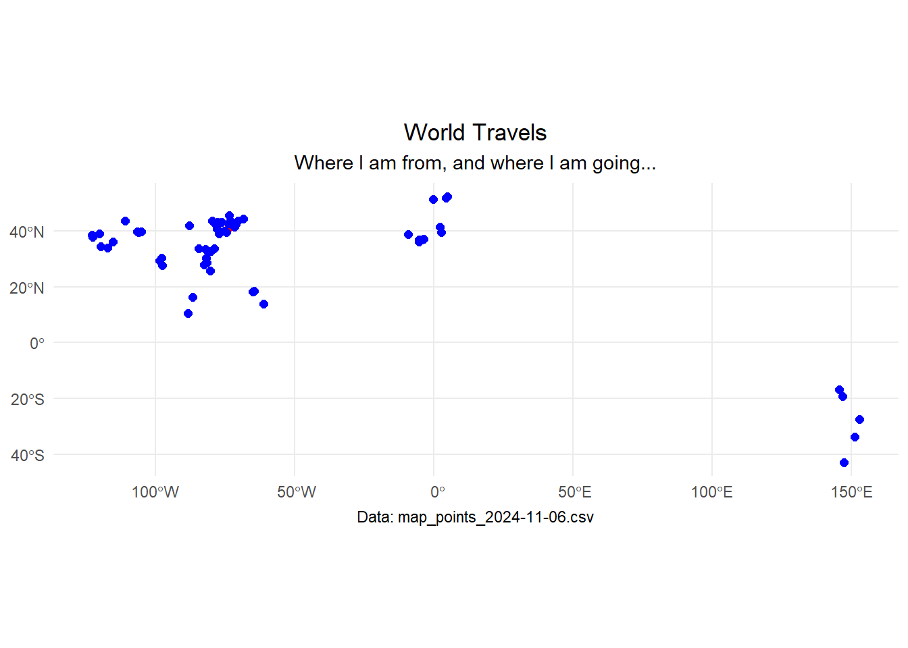

World Travels
#30DayMapChallenge
Day 2: Lines
I wanted to make a quick map that will help me visualize all the the places I’ve been.
Let’s go ahead and plot this.
I wanted to make a quick map that will help me visualize all the the places I’ve been.
Let’s go ahead and plot this.
